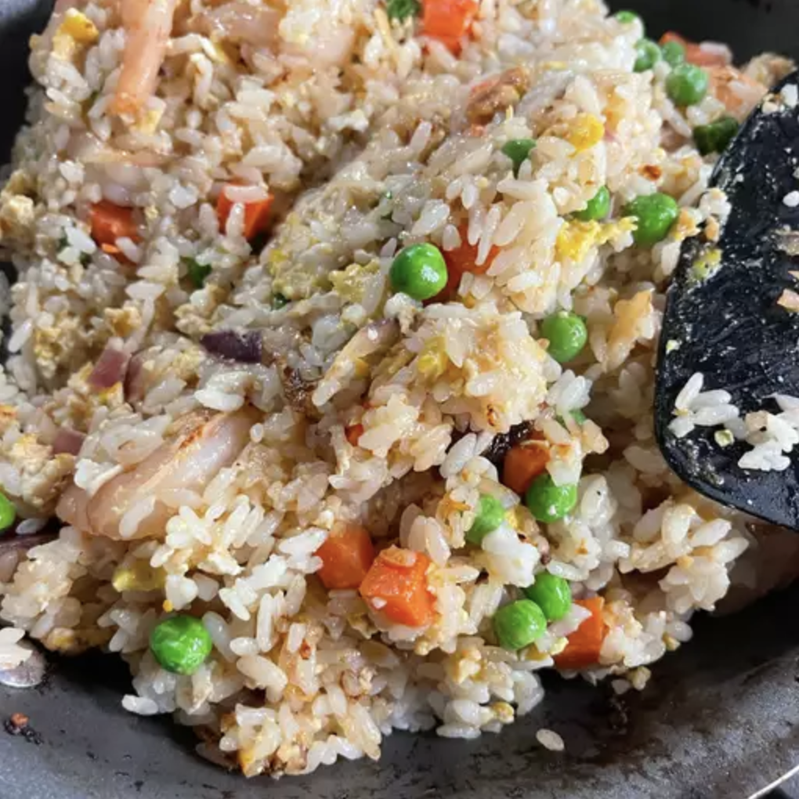

Cilantro Fried Rice

Description
I like fried rice, but I love cilantro more.
The meat & seafood options in this recipe can be swapped
out with alternative to suit the cook or consumer.
The cilantro is mandatory though.
Ingredients
- 4 tbsp vegetable oil
- 5 cloves garlic; finely chopped
- 2 green chilies; diced
- 2 cups chicken breast; boneless, skinless, and cubed
- 2 cups cooked jasmine rice; peeled, seeded, coursely chopped
- 1 tbsp white sugar
- 1 tbsp fish sauce
- 1 tbsp soy sauce
- 2 tbsp green onions; chopped
- 2 tbsp fresh basil leaves; chopped
- 5 tbsp fresh cilantro; chopped
Steps
- Heat oil in a wok or large skillet, over medium-high heat.
Fry garlic until golden then add chile pepper and chicken meat, and stir-fry until cooked through.
- When chicken is cooked, add rice, sugar, fish sauce, and soy sauce.
Cook over medium heat, stirring gently.
When mixture is well blended, stir in green onions, basil, and cilantro.
Cook for 1 more minute, then serve hot.
Disclaimer
Picture and recipe on this page are courtesy of:
allrecipes.com
. I take no ownership of the recipe nor picture on this page.
This webpage is simply for personal education purposes.
Please take the time to look at their great website for more recipes.
Or click
here
for my other webpages featuring my favorite foods.